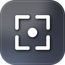

Herhangi bir sekmede ekran görüntüsü al, işaretle, sohbete gönder.
Alt+Shift+S ile yakala.İlk açılışta "izin" sorabilir — izin ver. Çalışması için chat hesabına (panel/gömülü) girişli olman gerekir.
ulak-chrome.zip'i bir klasöre çıkar (silme/taşıma).chrome://extensionsChrome/Edge güvenlik nedeniyle mağaza dışı linkten tek-tık kurulumu engeller; bu yüzden "indir + klasör" yöntemi gerekir. (Mağaza yayını yapılırsa tek tık olur.)
Bu uzantı Firefox (tek tık) ve Chrome/Edge (paket) destekler. Lütfen bu sayfayı o tarayıcılardan birinde aç.
Tüm sürümler / dosyalarUlak — Bet Cyp · destek ekran görüntüsü aracı